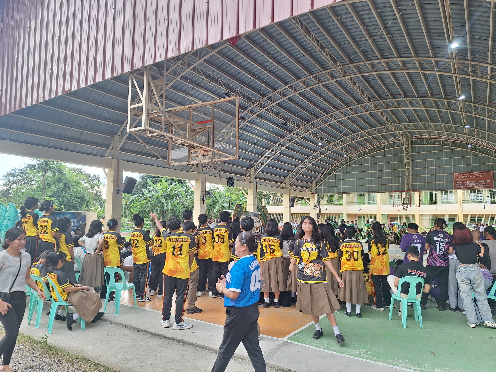
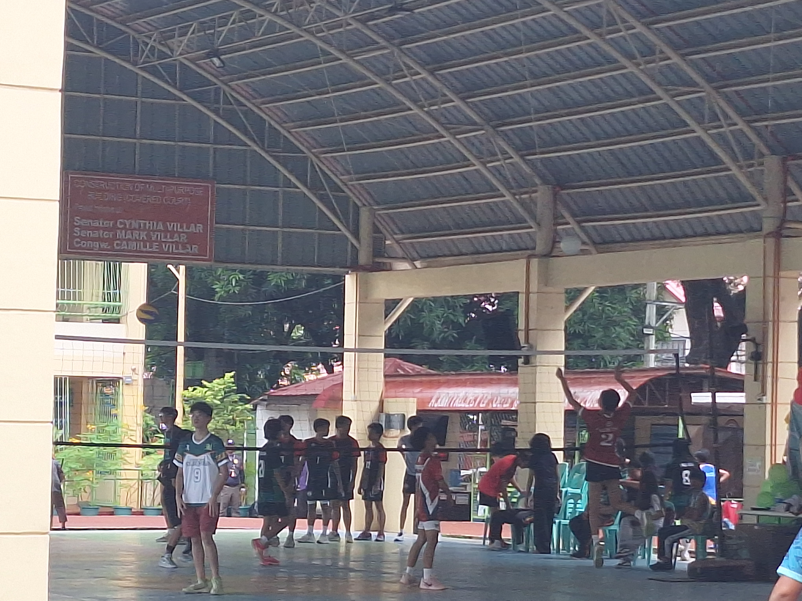
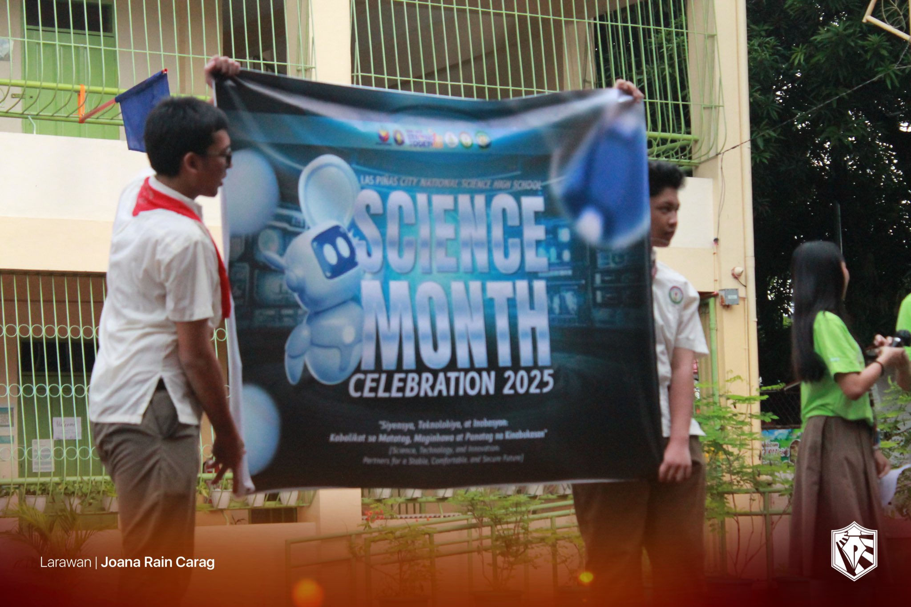
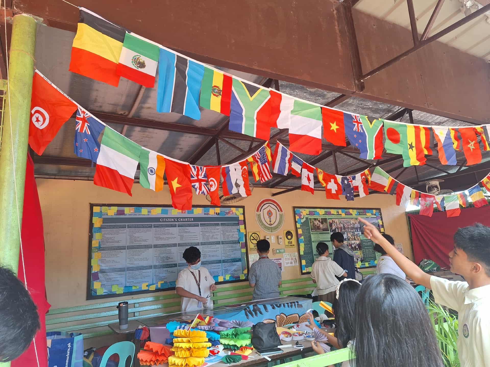
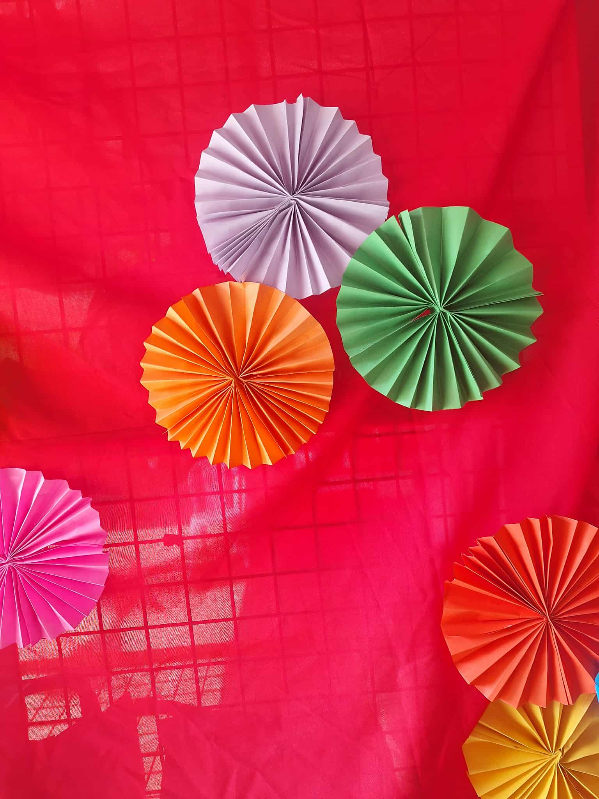
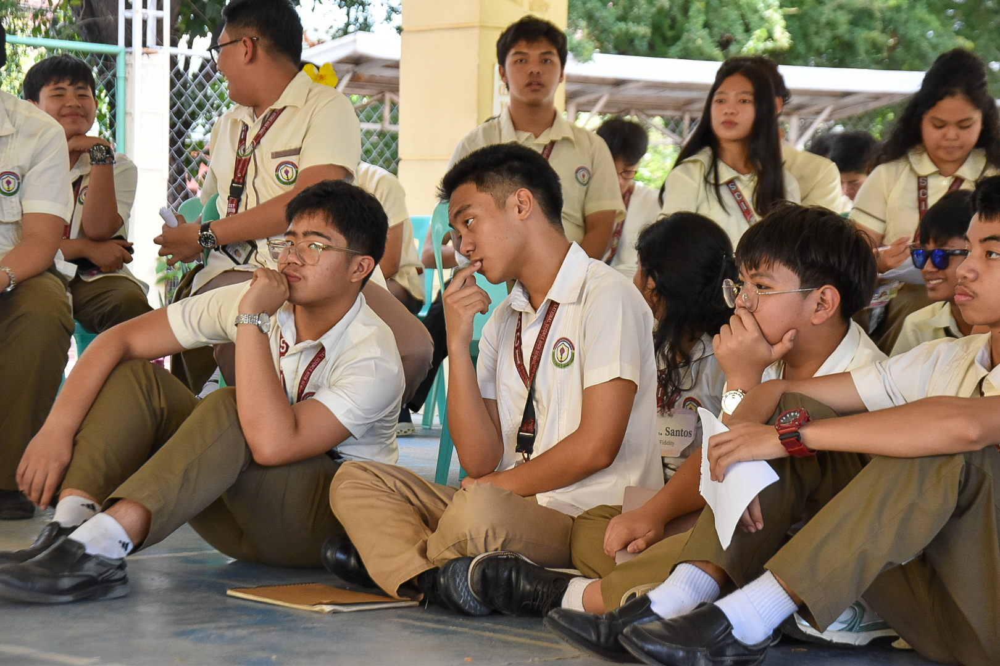
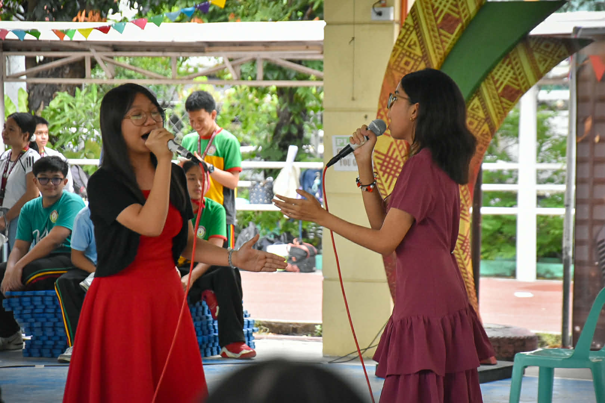
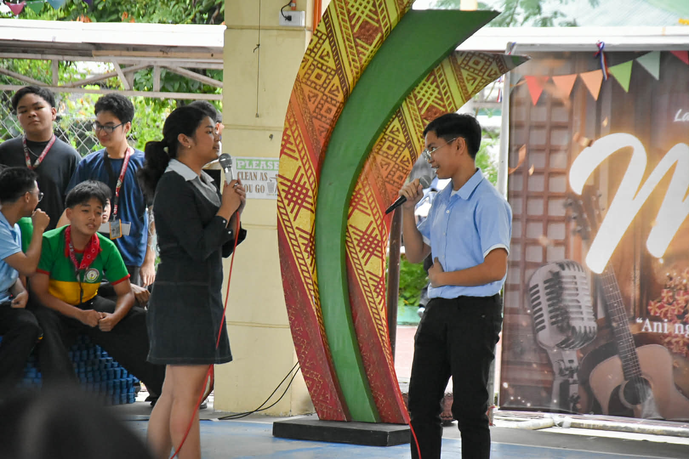
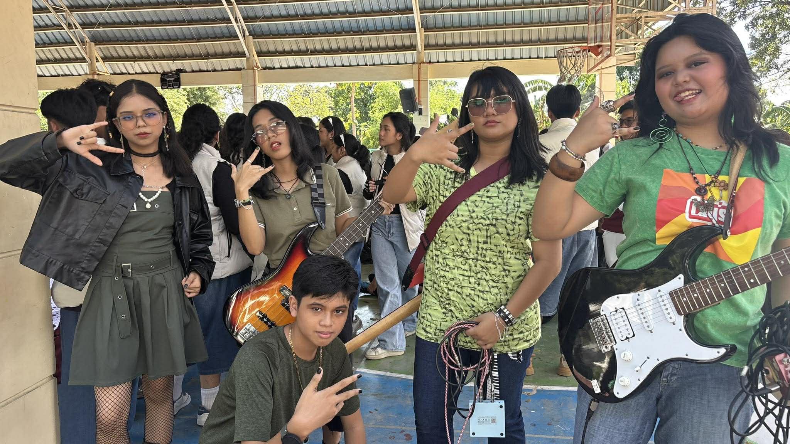
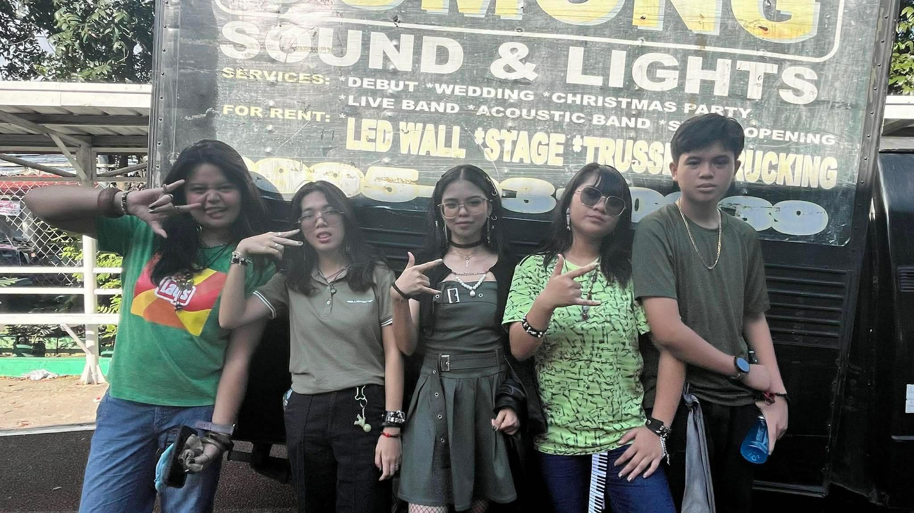

Here are the school events I participated in this year, each with pictures and reflections.
Buwan ng Wika
Awarding from Paham
Opening of Buwan ng Wika from Paham
Singing during Buwan ng Wika (from Ezekiel Aguilar)
During Buwan ng Wika, I learned about our culture, and how amazing it is to be a Filipino. Our language represents how far we have come as a country. I learned to express my culture and be proud of being Filipino in my real life. I participated in the event through wearing a traditional Filipino costume every monday. If I explain this to a classmate, I would tell them about how we express our culture proudly every August.
Intramurals

Mr. and Mrs Intrams

Practice in intrams
Alger playing Table Tennis(From Jade Imperial)
Intrams is an entertaining part of school, something I look forward to personally. It teaches us proper sportsmanship, and how we can still enjoy, even if we lose. If I to teach it to a classmate, its like a sports even where anyone can participate.
Science Month
Science Awarding

Sceince Opening (from Paham)
Science Defense of Allisons group
Science month is a month of innovation and creativity. It teaches us to be curious and to see things that people would overlook. I did not participate in this event. If i were to teach it to a classmate, it would be a time where we can let our creativity run wild.
AP Month

AP preperations (From Allison Pineda)

AP preperations (Fom Allison Pineda)
AP Seminar (Bela Paguigan)
AP month is a month of culture, as well as a month of speaking. I did not participate in it. But if I were to explain it to someone, it would be a month to learn, to express, and to enjoy. It is important because we all need to learn to express ourselves properly, and to know about history and geography.
Teachers' Day
Paham picture on Teachers Day
Fidelity teachers day
Teachers’ Day Video
Teacher's Day was an extremely fun event, because Fidelity rented the entire court, so we had a lot of freedom. We learned to appreciate our teachers, and why they are so important.
MATH MURAL
9-Fidelity Math Mural!!
This event is thought to be about the importance of creativity and cooperation, mixing both into one event. This can help me in the future if I'm working with others while also outputting my own work. I helped the artists by giving ideas and helping them with practical stuff, such as paint and drying. If I were to explain this to someone, it would be like combining the steady flow of math with the creativity of art.
Math Idol 2
Its me!(credits Jade Imperial)
My good friend Ezekiel Aguilar (credits Jade Imperial)
ski
Booklandia 2026
Once again my good friend Ezekiel! (credits Jade Imperial)
Fidel presi Reese big head (credits Jade Imperial)
This event showed me that the entertainment books and their characters can bring you so much joy. I didn't get to participate, but if I were to explain this event, it's like a pagent where different characters can show their understanding of a certain character.
Miting De Avance
Our grade 10 level rep! Reese Cruz!

Audience members
This event showed me the professionalism and commitment that my fellow students and batchmates are willing to put into something. I can use them as an example on how much effort and responsibility I should put into something if it's of great importance to me. If I were to explain this to someone, it would be 2 parties competing for each member for their roles through questions and interviews.
OPM Duets

Tam and Bela! (credits Jade Imperial)

Eliz and Alger! (credits Jade Imperial)
This event showed me the power of teamwork in music and in other things. I can use this in my life by applying teamwork to situations that require me to work with others. I got to watch this event, and it was amazing, seeing how the partners interacted with each other and harmonized. I could feel it in not just my ears. If I were to explain this to someone, its a performance with 2 people, they sing in harmony, as if they were one person.
Battle of the Bands! 3

Me and my band after battle of the bands

My band before performing
This event showed me the beauty of teamwork and perfect synchronization in music. I can apply this to be able to work with someone as if they were an extension of me, being able to be in sync with them in our shared ideas and thoughts. I was able to join this event (as you can see in the images), and it was extremely fun. It's like if you were to put a bunch of people in groups and tell them to work together and play.